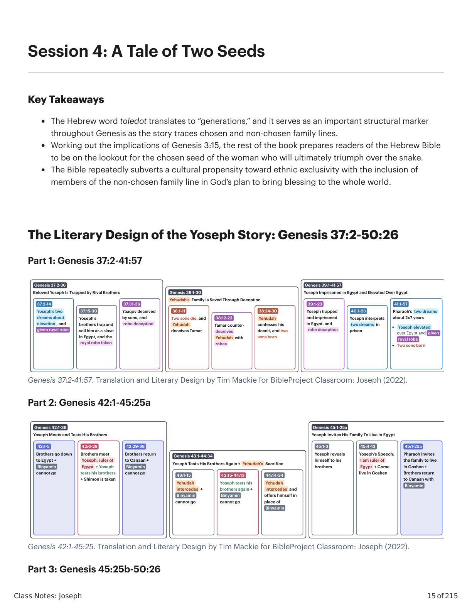
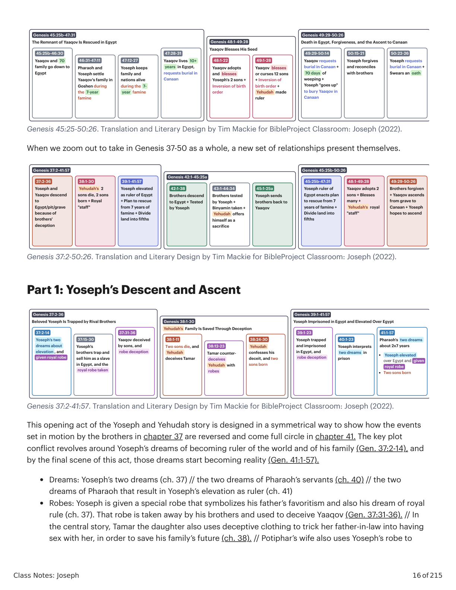
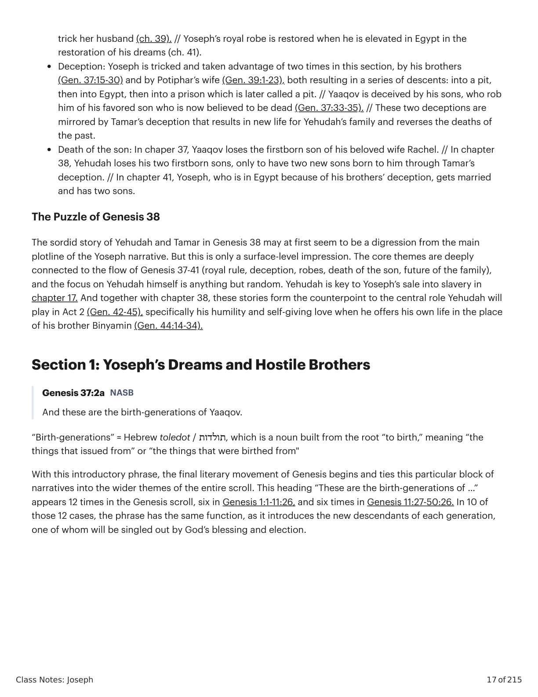
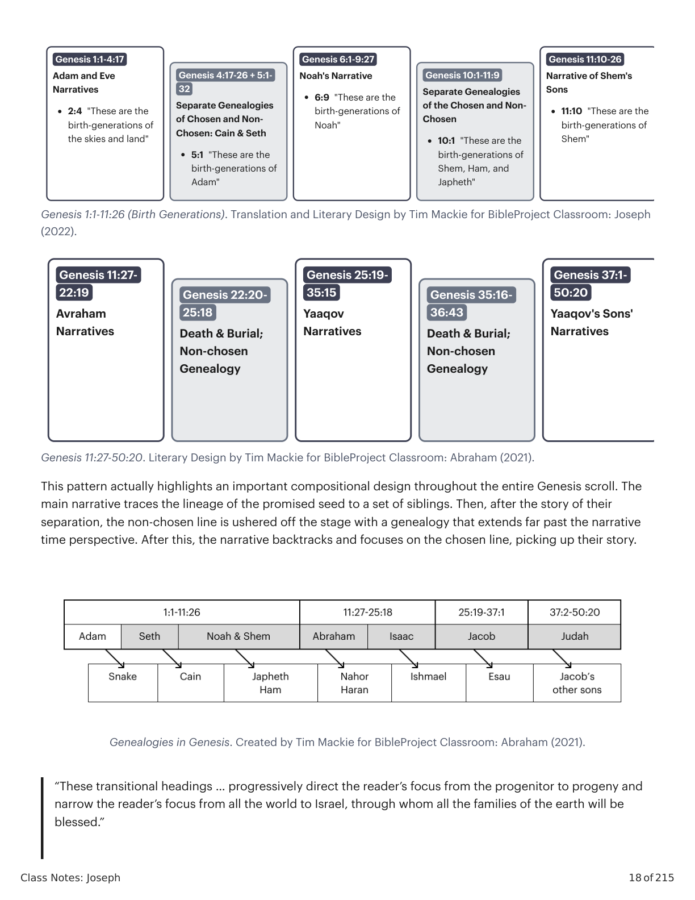
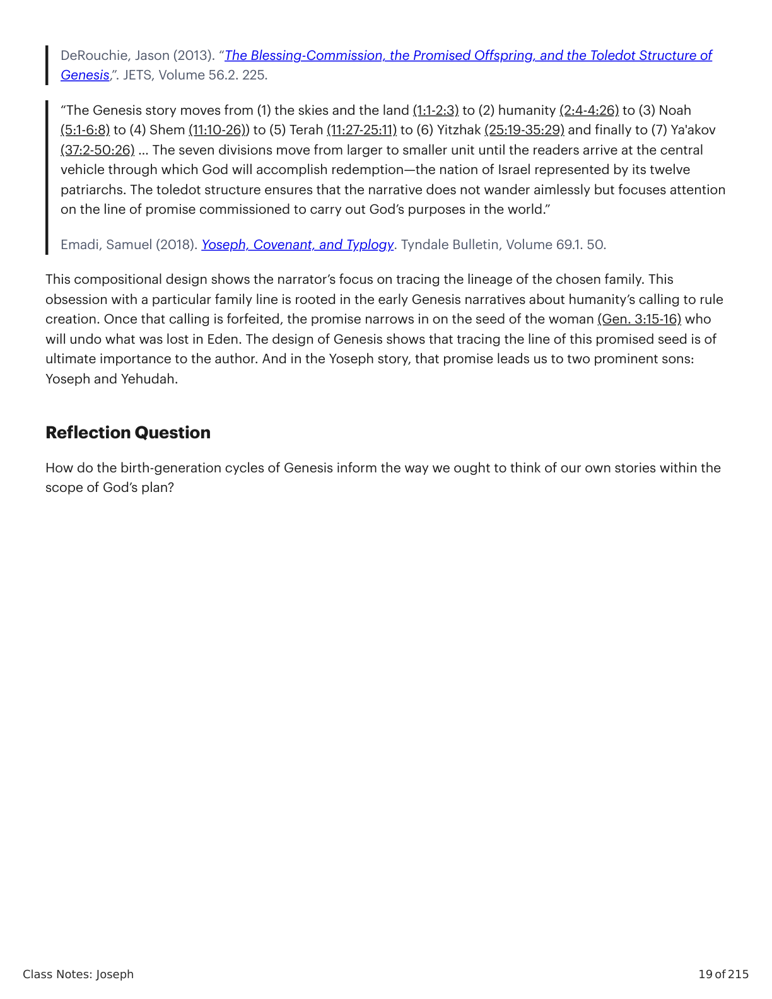

Sessão 4: Um Conto de Duas SementesSession 4: A Tale of Two Seeds
Class Notes: Joseph
15 of 215
Session 4: A Tale of Two Seeds
Key Takeaways
The Hebrew word toledot translates to “generations,” and it serves as an important structural marker
throughout Genesis as the story traces chosen and non-chosen family lines.
Working out the implications of Genesis 3:15, the rest of the book prepares readers of the Hebrew Bible
to be on the lookout for the chosen seed of the woman who will ultimately triumph over the snake.
The Bible repeatedly subverts a cultural propensity toward ethnic exclusivity with the inclusion of
members of the non-chosen family line in God’s plan to bring blessing to the whole world.
The Literary Design of the Yoseph Story: Genesis 37:2-50:26
Part 1: Genesis 37:2-41:57
Genesis 37:2-41:57. Translation and Literary Design by Tim Mackie for BibleProject Classroom: Joseph (2022).
Part 2: Genesis 42:1-45:25a
Genesis 42:1-45:25. Translation and Literary Design by Tim Mackie for BibleProject Classroom: Joseph (2022).
Part 3: Genesis 45:25b-50:26
Genesis 37:2-36
Beloved Yoseph Is Trapped by Rival Brothers
37:2-14
Yoseph's two
dreams about
elevation , and
given royal robe
37:15-30
Yoseph's
brothers trap and
sell him as a slave
in Egypt, and the
royal robe taken
37:31-36
Yaaqov deceived
by sons, and
robe deception
Genesis 38:1-30
Yehudah's Family Is Saved Through Deception
38:1-11
Two sons die, and
Yehudah
deceives Tamar
38:12-23
Tamar counter-
deceives
Yehudah with
robes
38:24-30
Yehudah
confesses his
deceit, and two
sons born
Genesis 39:1-41:57
Yoseph Imprisoned in Egypt and Elevated Over Egypt
39:1-23
Yoseph trapped
and imprisoned
in Egypt, and
robe deception
40:1-23
Yoseph interprets
two dreams in
prison
41:1-57
Pharaoh's two dreams
about 2x7 years
Yoseph elevated
over Egypt and given
royal robe
Two sons born
Genesis 42:1-38
Yoseph Meets and Tests His Brothers
42:1-5
Brothers go down
to Egypt +
Binyamin
cannot go
42:6-28
Brothers meet
Yoseph, ruler of
Egypt + Yoseph
tests his brothers
+ Shimon is taken
42:29-38
Brothers return
to Canaan +
Binyamin
cannot go
Genesis 43:1-44:34
Yoseph Tests His Brothers Again + Yehudah's Sacrifice
43:1-15
Yehudah
intercedes +
Binyamin
cannot go
43:15-44:13
Yoseph tests his
brothers again +
Binyamin
cannot go
44:14-34
Yehudah
intercedes and
offers himself in
place of
Binyamin
Genesis 45:1-25a
Yoseph Invites His Family To Live in Egypt
45:1-3
Yoseph reveals
himself to his
brothers
45:4-13
Yoseph's Speech:
I am ruler of
Egypt + Come
live in Goshen
45:1-25a
Pharaoh invites
the family to live
in Goshen +
Brothers return
to Canaan with
Binyamin

Gênesis X:Y. Tradução e Design Literário por Tim Mackie para BibleProject Classroom: José (2021).Genesis X:Y. Translation and Literary Design by Tim Mackie for BibleProject Classroom: Joseph (2021).
Class Notes: Joseph
16 of 215
Genesis 45:25-50:26. Translation and Literary Design by Tim Mackie for BibleProject Classroom: Joseph (2022).
When we zoom out to take in Genesis 37-50 as a whole, a new set of relationships present themselves.
Genesis 37:2-50:26. Translation and Literary Design by Tim Mackie for BibleProject Classroom: Joseph (2022).
Part 1: Yoseph’s Descent and Ascent
Genesis 37:2-41:57. Translation and Literary Design by Tim Mackie for BibleProject Classroom: Joseph (2022).
This opening act of the Yoseph and Yehudah story is designed in a symmetrical way to show how the events
set in motion by the brothers in chapter 37 are reversed and come full circle in chapter 41. The key plot
conflict revolves around Yoseph’s dreams of becoming ruler of the world and of his family (Gen. 37:2-14), and
by the final scene of this act, those dreams start becoming reality (Gen. 41:1-57).
Dreams: Yoseph’s two dreams (ch. 37) // the two dreams of Pharaoh’s servants (ch. 40) // the two
dreams of Pharaoh that result in Yoseph’s elevation as ruler (ch. 41)
Robes: Yoseph is given a special robe that symbolizes his father’s favoritism and also his dream of royal
rule (ch. 37). That robe is taken away by his brothers and used to deceive Yaaqov (Gen. 37:31-36). // In
the central story, Tamar the daughter also uses deceptive clothing to trick her father-in-law into having
sex with her, in order to save his family’s future (ch. 38). // Potiphar’s wife also uses Yoseph’s robe to
Genesis 45:25b-47:31
The Remnant of Yaaqov Is Rescued in Egypt
45:25b-46:30
Yaaqov and 70
family go down to
Egypt
46:31-47:11
Pharaoh and
Yoseph settle
Yaaqov's family in
Goshen during
the 7-year
famine
47:12-27
Yoseph keeps
family and
nations alive
during the 7-
year famine
47:28-31
Yaaqov lives 10+
years in Egypt,
requests burial in
Canaan
Genesis 48:1-49:28
Yaaqov Blesses His Seed
48:1-22
Yaaqov adopts
and blesses
Yoseph's 2 sons +
Inversion of birth
order
49:1-28
Yaaqov blesses
or curses 12 sons
+ Inversion of
birth order +
Yehudah made
ruler
Genesis 49:29-50:26
Death in Egypt, Forgiveness, and the Ascent to Canaan
49:29-50:14
Yaaqov requests
burial in Canaan +
70 days of
weeping +
Yoseph "goes up"
to bury Yaaqov in
Canaan
50:15-21
Yoseph forgives
and reconciles
with brothers
50:22-26
Yoseph requests
burial in Canaan +
Swears an oath
Genesis 37:2-41:57
37:2-36
Yoseph and
Yaaqov descend
to
Egypt/pit/grave
because of
brothers'
deception
38:1-30
Yehudah's 2
sons die, 2 sons
born + Royal
"staff"
39:1-41:57
Yoseph elevated
as ruler of Eqypt
+ Plan to rescue
from 7 years of
famine + Divide
land into fifths
Genesis 42:1-45:25a
42:1-38
Brothers descend
to Egypt + Tested
by Yoseph
43:1-44:34
Brothers tested
by Yoseph +
Binyamin taken +
Yehudah offers
himself as a
sacrifice
45:1-25a
Yoseph sends
brothers back to
Yaaqov
Genesis 45:25b-50:26
45:25b-47:31
Yoseph ruler of
Egypt enacts plan
to rescue from 7
years of famine +
Divide land into
fifths
48:1-49:28
Yaaqov adopts 2
sons + Blesses
many +
Yehudah's royal
"staff"
49:29-50:26
Brothers forgiven
+ Yaaqov ascends
from grave to
Canaan + Yoseph
hopes to ascend
Genesis 37:2-36
Beloved Yoseph Is Trapped by Rival Brothers
37:2-14
Yoseph's two
dreams about
elevation , and
given royal robe
37:15-30
Yoseph's
brothers trap and
sell him as a slave
in Egypt, and the
royal robe taken
37:31-36
Yaaqov deceived
by sons, and
robe deception
Genesis 38:1-30
Yehudah's Family Is Saved Through Deception
38:1-11
Two sons die, and
Yehudah
deceives Tamar
38:12-23
Tamar counter-
deceives
Yehudah with
robes
38:24-30
Yehudah
confesses his
deceit, and two
sons born
Genesis 39:1-41:57
Yoseph Imprisoned in Egypt and Elevated Over Egypt
39:1-23
Yoseph trapped
and imprisoned
in Egypt, and
robe deception
40:1-23
Yoseph interprets
two dreams in
prison
41:1-57
Pharaoh's two dreams
about 2x7 years
Yoseph elevated
over Egypt and given
royal robe
Two sons born

Gênesis X:Y. Tradução e Design Literário por Tim Mackie para BibleProject Classroom: José (2021).Genesis X:Y. Translation and Literary Design by Tim Mackie for BibleProject Classroom: Joseph (2021).
Class Notes: Joseph
17 of 215
trick her husband (ch. 39). // Yoseph’s royal robe is restored when he is elevated in Egypt in the
restoration of his dreams (ch. 41).
Deception: Yoseph is tricked and taken advantage of two times in this section, by his brothers
(Gen. 37:15-30) and by Potiphar’s wife (Gen. 39:1-23), both resulting in a series of descents: into a pit,
then into Egypt, then into a prison which is later called a pit. // Yaaqov is deceived by his sons, who rob
him of his favored son who is now believed to be dead (Gen. 37:33-35). // These two deceptions are
mirrored by Tamar’s deception that results in new life for Yehudah’s family and reverses the deaths of
the past.
Death of the son: In chaper 37, Yaaqov loses the firstborn son of his beloved wife Rachel. // In chapter
38, Yehudah loses his two firstborn sons, only to have two new sons born to him through Tamar’s
deception. // In chapter 41, Yoseph, who is in Egypt because of his brothers’ deception, gets married
and has two sons.
The Puzzle of Genesis 38
The sordid story of Yehudah and Tamar in Genesis 38 may at first seem to be a digression from the main
plotline of the Yoseph narrative. But this is only a surface-level impression. The core themes are deeply
connected to the flow of Genesis 37-41 (royal rule, deception, robes, death of the son, future of the family),
and the focus on Yehudah himself is anything but random. Yehudah is key to Yoseph’s sale into slavery in
chapter 17. And together with chapter 38, these stories form the counterpoint to the central role Yehudah will
play in Act 2 (Gen. 42-45), specifically his humility and self-giving love when he offers his own life in the place
of his brother Binyamin (Gen. 44:14-34).
Section 1: Yoseph’s Dreams and Hostile Brothers
Genesis 37:2a NASB
And these are the birth-generations of Yaaqov.
“Birth-generations” = Hebrew toledot / תולדות, which is a noun built from the root “to birth,” meaning “the
things that issued from” or “the things that were birthed from"
With this introductory phrase, the final literary movement of Genesis begins and ties this particular block of
narratives into the wider themes of the entire scroll. This heading “These are the birth-generations of …”
appears 12 times in the Genesis scroll, six in Genesis 1:1-11:26, and six times in Genesis 11:27-50:26. In 10 of
those 12 cases, the phrase has the same function, as it introduces the new descendants of each generation,
one of whom will be singled out by God’s blessing and election.

Gênesis X:Y. Tradução e Design Literário por Tim Mackie para BibleProject Classroom: José (2021).Genesis X:Y. Translation and Literary Design by Tim Mackie for BibleProject Classroom: Joseph (2021).
Class Notes: Joseph
18 of 215
Genesis 1:1-11:26 (Birth Generations). Translation and Literary Design by Tim Mackie for BibleProject Classroom: Joseph
(2022).
Genesis 11:27-50:20. Literary Design by Tim Mackie for BibleProject Classroom: Abraham (2021).
This pattern actually highlights an important compositional design throughout the entire Genesis scroll. The
main narrative traces the lineage of the promised seed to a set of siblings. Then, after the story of their
separation, the non-chosen line is ushered off the stage with a genealogy that extends far past the narrative
time perspective. After this, the narrative backtracks and focuses on the chosen line, picking up their story.
Genealogies in Genesis. Created by Tim Mackie for BibleProject Classroom: Abraham (2021).
“These transitional headings … progressively direct the reader’s focus from the progenitor to progeny and
narrow the reader’s focus from all the world to Israel, through whom all the families of the earth will be
blessed.”
Genesis 1:1-4:17
Adam and Eve
Narratives
• 2:4 "These are the
birth-generations of
the skies and land"
Genesis 4:17-26 + 5:1-
32
Separate Genealogies
of Chosen and Non-
Chosen: Cain & Seth
• 5:1 "These are the
birth-generations of
Adam"
Genesis 6:1-9:27
Noah's Narrative
• 6:9 "These are the
birth-generations of
Noah"
Genesis 10:1-11:9
Separate Genealogies
of the Chosen and Non-
Chosen
• 10:1 "These are the
birth-generations of
Shem, Ham, and
Japheth"
Genesis 11:10-26
Narrative of Shem's
Sons
• 11:10 "These are the
birth-generations of
Shem"
Genesis 11:27-
22:19
Avraham
Narratives
Genesis 22:20-
25:18
Death & Burial;
Non-chosen
Genealogy
Genesis 25:19-
35:15
Yaaqov
Narratives
Genesis 35:16-
36:43
Death & Burial;
Non-chosen
Genealogy
Genesis 37:1-
50:20
Yaaqov's Sons'
Narratives

Gênesis X:Y. Tradução e Design Literário por Tim Mackie para BibleProject Classroom: José (2021).Genesis X:Y. Translation and Literary Design by Tim Mackie for BibleProject Classroom: Joseph (2021).
Class Notes: Joseph
19 of 215
DeRouchie, Jason (2013). “The Blessing-Commission, the Promised Offspring, and the Toledot Structure of
Genesis,”. JETS, Volume 56.2. 225.
“The Genesis story moves from (1) the skies and the land (1:1-2:3) to (2) humanity (2:4-4:26) to (3) Noah
(5:1-6:8) to (4) Shem (11:10-26)) to (5) Terah (11:27-25:11) to (6) Yitzhak (25:19-35:29) and finally to (7) Ya'akov
(37:2-50:26) … The seven divisions move from larger to smaller unit until the readers arrive at the central
vehicle through which God will accomplish redemption—the nation of Israel represented by its twelve
patriarchs. The toledot structure ensures that the narrative does not wander aimlessly but focuses attention
on the line of promise commissioned to carry out God’s purposes in the world.”
Emadi, Samuel (2018). Yoseph, Covenant, and Typlogy. Tyndale Bulletin, Volume 69.1. 50.
This compositional design shows the narrator’s focus on tracing the lineage of the chosen family. This
obsession with a particular family line is rooted in the early Genesis narratives about humanity’s calling to rule
creation. Once that calling is forfeited, the promise narrows in on the seed of the woman (Gen. 3:15-16) who
will undo what was lost in Eden. The design of Genesis shows that tracing the line of this promised seed is of
ultimate importance to the author. And in the Yoseph story, that promise leads us to two prominent sons:
Yoseph and Yehudah.
Reflection Question
How do the birth-generation cycles of Genesis inform the way we ought to think of our own stories within the
scope of God’s plan?

Gênesis X:Y. Tradução e Design Literário por Tim Mackie para BibleProject Classroom: José (2021).Genesis X:Y. Translation and Literary Design by Tim Mackie for BibleProject Classroom: Joseph (2021).
Class Notes: Joseph
20 of 215
Module 2: Joseph’s Dreams and
Hostile Brothers
SESSIONS 5-9
Meet Joseph the dreamer and follow the literary links that trace his descent from lofty
visions of honor to the depths of despair in a pit.